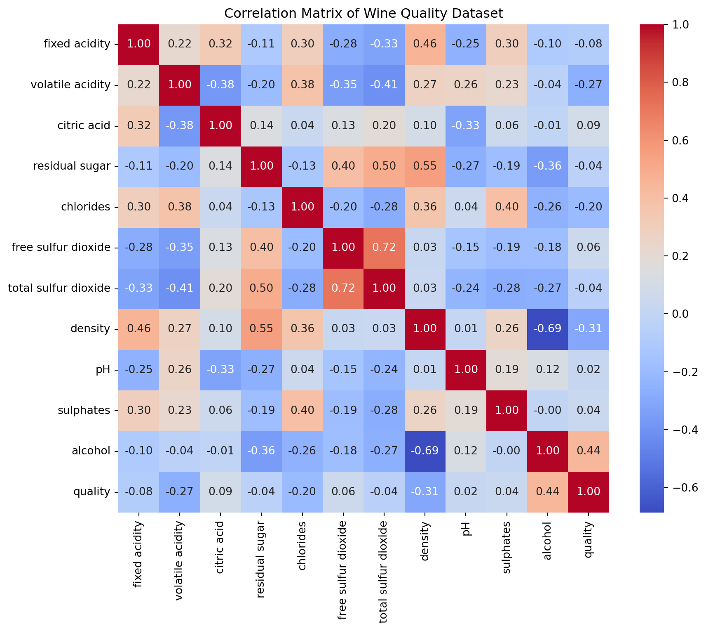
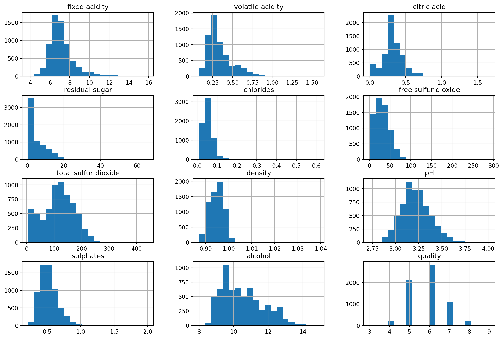

class kMeans():
def __init__(self, K, X): # Initialize k
self.K = K
self.centroids = X[np.random.choice(X.shape[0], size=K, replace=False)]
self.assignments = np.zeros(X.shape[0], dtype=int)
self.X = X
def update_centroids(self, closest_centroids): # Assign centroids
X_grouped = [self.X[closest_centroids == idx] for idx in range(len(self.centroids))]
self.centroids = [X.mean(axis=0) for X in X_grouped]
def find_cluster(self): # Convergence
while True:
distances = np.array([np.linalg.norm(self.X - centroid, axis=1) for centroid in self.centroids]).T
closest_centroids = np.argmin(distances, axis=1)
if np.array_equal(closest_centroids,self.assignments):
break
else:
self.update_centroids(closest_centroids)
self.assignments = closest_centroids
return self.assignmentsK-Means Clustering: Conceptual Overview
K-means clustering is a form of unsupervised learning that divides data into k groups, called clusters. The split of data into groups is unknown, and the data points fall into a certain cluster based on the mathematical distance measurement from the center of the cluster. In most instances, the mathematical distance measurement is Eucledian, with the mean or median of the cluster being the determining factor of whether or not a data point belongs. An apt division minimizes the variation within each cluster with maximized variation between each cluster. This means we want data points within a cluster to be similar to each other, but we also want the data points of each cluster to be distinctly different from other clusters, so that clusters formed by k-means clustering are “compact and isolated”.
K-means algorithm
The process for K-means clustering is as follows: 1. initialize K: set k equal to the number of clusters desired 2. Assign centroids:
- Expectation step: assign data points to closest centroid based on predetermined measurement of distance
- Maximization step: reassigns center of cluster based on mean of data points in cluster
Expectation and maximization steps repeat until we reach convergence.
Here, we have code for the manual implementation of k-means clustering, showing each step of the k-means clustering algorithm in Python.
Practical Example
Before we begin, we will start by loading in the necessary libraries.
import sklearn as sk
import pandas as pd
import numpy as np
import matplotlib.pyplot as plt
import seaborn as sns
from sklearn.cluster import KMeansCode Implementation
Process: First, we concatentated the white wine and red wine datasets. We will then do data preprocessing such as potentially dropping some of the white wine samples so that the data is more balanced. This is followed by Exploratory Data Analysis to understand the variables using histograms of variable distribution and heatmaps to understand variable correlation. We will then normalize and standardize the variables with strongly skewed distributions and outliers using log transformation and other methods, before applying the k-means clustering algorithm.
Goal: To predict the color of wine based on a variety of factors, such as pH, alcohol level, and more.
Dataset Description:
We will show an example of running the k-means clustering algorithm on the Wine Quality from UC Irvine. This dataset contains wine quality data, with features such as citric_acid, density, pH, and more. The response variable of this dataset is wine_quality, which is rated on a scale from 0-10. This dataset is split into 2 sub-datasets, one regarding red wine and one regarding white wine. Since k-means clustering is best suited to classification tasks, we will attempt to group the data into red wine and white wine rather than predicting wine_quality.
We will start by creating the response variable color for each dataset and then merging the two datasets into one.
red = pd.read_csv('data/winequality-red.csv', sep=';', header=0)
white = pd.read_csv('data/winequality-white.csv', sep=';', header=0)
red['color'] = 'red'
white['color'] = 'white'
wine_data = pd.concat([red, white], axis=0)
print(len(wine_data))
print(pd.value_counts(wine_data['color']))6497
color
white 4898
red 1599
Name: count, dtype: int64/var/folders/y_/0rh9km310w908ldp8j4n2b7m0000gn/T/ipykernel_71219/3167091220.py:9: FutureWarning: pandas.value_counts is deprecated and will be removed in a future version. Use pd.Series(obj).value_counts() instead.
print(pd.value_counts(wine_data['color']))We now have one dataset wine_data that has 6947 observations total, with 4898 white wine observations and 1599 red wine observations. This is quite unbalanced, so when we create our training dataset, we will have to stratify our sampling to ensure an even proportion of red and white wine. ## FIX ME is this fine? shoudl we drop some of the white wine samples?
Exploratory Data Analysis
Prior to applying the algorithm to our data, we should first explore the dataset to get an idea of the structure of this dataset.
First, let us take a look at the correlations between features.
correlation_matrix = wine_data.drop(columns=['color']).corr()
plt.figure(figsize=(10, 8))
sns.heatmap(correlation_matrix, annot=True, fmt=".2f", cmap='coolwarm', cbar=True)
plt.title('Correlation Matrix of Wine Quality Dataset')
plt.show()
There are a few relationships to note. The highest correlated variables are total sulfur dioxide and free sulfur dioxide, which exhibit a positive correlation. This makes sense as total sulfur dioxide is usually calculated the sum of free sulfur dioxide and bound sulfure dioxide. This could support an argument for dropping one of these predictors from our analysis, but we do not have any measure for bound sulfur dioxide and do not have additional information about the calculation of these variables readily avaible, so it could be beneficial to keep both predictors. ## FIX ME decide if we want to drop or not. Another relationship of note is the negative correlation between density and alcohol. This is another expected relation as higher ABV liquids are generally less dense. ## FIX ME add more here?
HISTOGRAMS
print(wine_data.head()) fixed acidity volatile acidity citric acid residual sugar chlorides \
0 7.4 0.70 0.00 1.9 0.076
1 7.8 0.88 0.00 2.6 0.098
2 7.8 0.76 0.04 2.3 0.092
3 11.2 0.28 0.56 1.9 0.075
4 7.4 0.70 0.00 1.9 0.076
free sulfur dioxide total sulfur dioxide density pH sulphates \
0 11.0 34.0 0.9978 3.51 0.56
1 25.0 67.0 0.9968 3.20 0.68
2 15.0 54.0 0.9970 3.26 0.65
3 17.0 60.0 0.9980 3.16 0.58
4 11.0 34.0 0.9978 3.51 0.56
alcohol quality color
0 9.4 5 red
1 9.8 5 red
2 9.8 5 red
3 9.8 6 red
4 9.4 5 red wine_data.hist(bins=20, figsize=(15, 10))
plt.show()
For each numerical variable, we generated histograms to visualize the distribution and analyze the spread of data. This analysis will help us identify patterns in the data, such as symmetry, skewness, and outliers, which will help us determine what data preprocessing should be done in order to create the best k-means algorithm. For example, the graphs show us that many of the variables, such as volatile acidity, residual sugar, chlorides, and sulphates, are heavily right-skewed, indicating that we might need to normalize or scale these features before applying the algorithm, potentially through log-transformation or other methods. Additionally, variables like residual sugar, total sulfur dioxide, and alcohol have long right tails, which indicate the presence of significant outliers. Because of these outliers, we could run into issues with the clustering results if we don’t address them. Lastly, pH, quality, and density all have more symmetric, bell-shaped distributions than the other variables, which are indicators that these would be good features to include in k-means clustering. ## Potentially switch order of feature histograms and correlation matrix
References
Cortez, P., Cerdeira, A., Almeida, F., Matos, T., & Reis, J. (2009). Wine Quality [Dataset]. UCI Machine Learning Repository. https://doi.org/10.24432/C56S3T. IBM. (n.d.). K-means clustering. Retrieved December 3, 2024, from https://www.ibm.com/topics/k-means-clustering